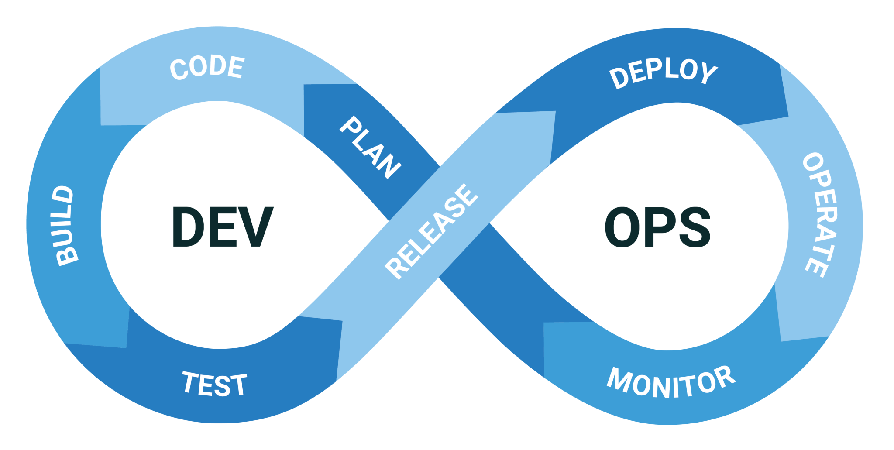

I have planned several paths for my future. Although I'm not very sure what the future holds, I believe there are three main options: pursuing a master's degree, starting a career in my field of interest, or creating my own business. Each option presents unique opportunities and challenges t hat I am eager to explore.
Pursued a master's degree
I find pursuing a Master's in Computer Science very interesting, so I've included it in my future plans
Learn more

Why I want to pursue a Master's degree?
I am convinced that pursuing a Master's degree in Computer Science will allow me to expand upon the knowledge I acquired during my Bachelor's studies and enable me to reach greater heights in my field."
Full stack developer
I aspire to become a full stack developer because it is a role that combines the challenges of both front-end and back-end development. This dual expertise not only makes the work more engaging and diverse but also allows for greater problem-solving opportunities. Additionally, the demand for full stack developers in the job market often translates to attractive compensation, making it a rewarding career choice


Sofeware Engineer
Being a Software Engineer is another career I aspire to because it offers the challenge of solving complex problems and developing innovative solutions. The high demand for this profession ensures great job opportunities and compensation.
DevOps Engineer
Becoming a DevOps Engineer is a career path I find appealing because it is in high demand, resulting in competitive compensation. This role not only offers the chance to integrate development and operations but also presents exciting challenges and rewards.
